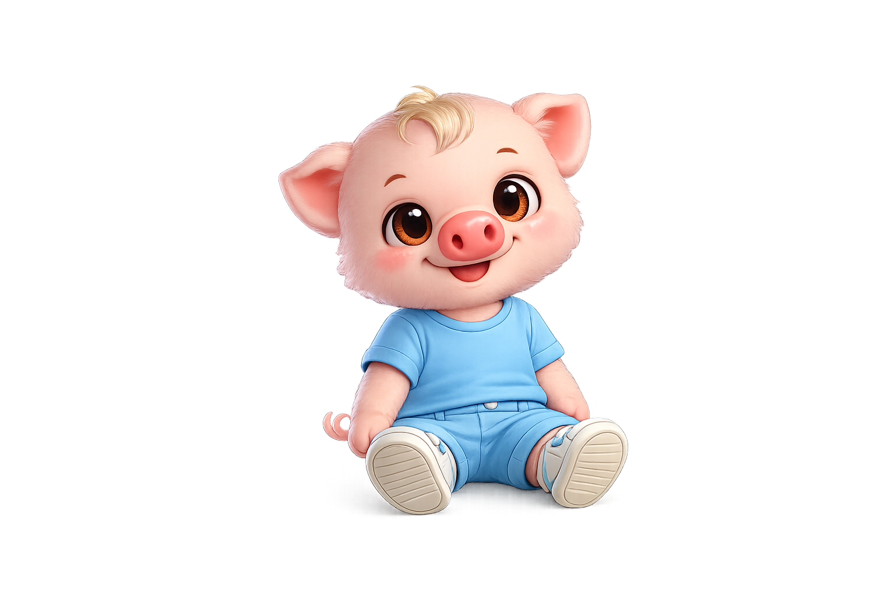
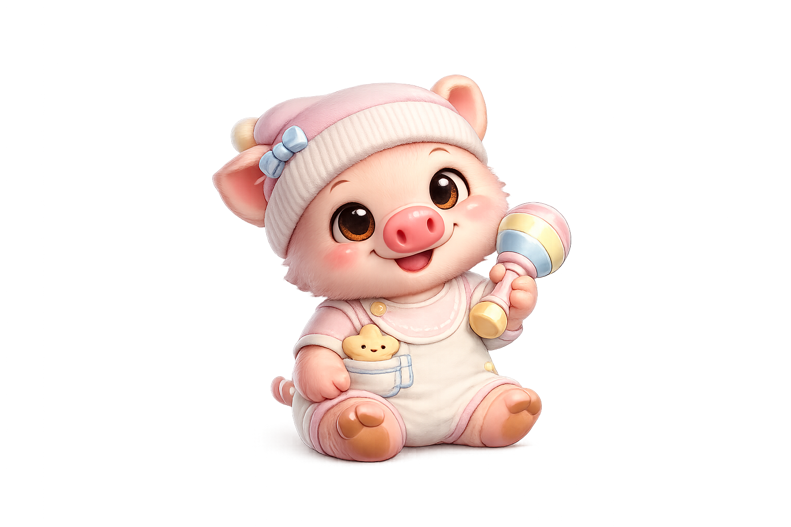
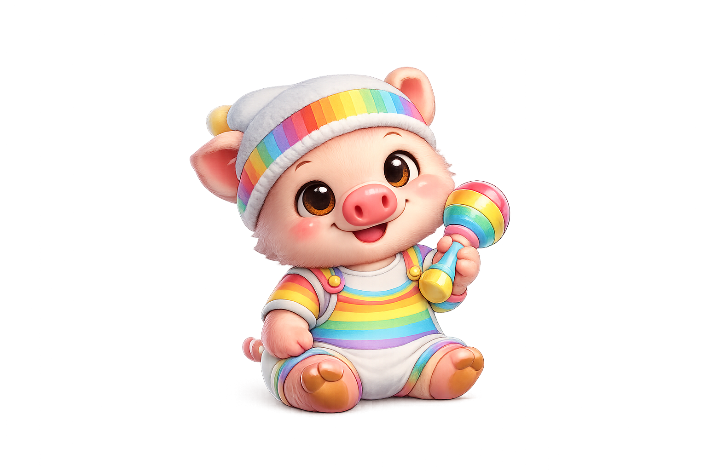

Escolhas
Esperar, comparar, planejar e reconhecer o que faz sentido em cada fase.
universo educativo em protótipo
Conheça um universo educativo interativo em desenvolvimento, com missões, personagens e simulações fictícias sobre planejamento, cidadania, tecnologia e escolhas saudáveis.
O Pig Principal é o protagonista juvenil dessas jornadas: roupa amarela, sinal de legal e o ioiô Master CR 1979 como convite ao movimento, à criatividade e ao equilíbrio fora das telas.

o universo Pig
O Pig acompanha histórias e atividades que aproximam planejamento, cultura, tecnologia e responsabilidade da vida cotidiana.
Esperar, comparar, planejar e reconhecer o que faz sentido em cada fase.
Senhas, privacidade, golpes e criptografia explicados sem medo e sem atalhos.
Consumo consciente, sustentabilidade e tecnologia em experiências fictícias.
PigCoin
PigCoin representa progresso narrativo e recompensas educativas internas. Não pode ser comprado, vendido, sacado ou convertido.
segurança digital
O Vantajinho olha tão longe para ganhar vantagem que tropeça no próprio rabo. Com ele, o Pig ensina a reconhecer pressa, promessa fácil e pedido suspeito.
Aprender a se protegerconteúdo que acompanha
Os níveis são editoriais e ainda dependem de classificação e revisão por país.
Cores, formas, contagem e histórias curtas.
Metas simples, escolhas e consumo consciente.
Privacidade, risco, tecnologia e planejamento.
Família, segurança, acessibilidade e legado.
famílias
Responsáveis ajudam a contextualizar histórias, conversar sobre escolhas e acompanhar conteúdos adequados.
Ver a participação familiarjogos
Desafios de memória, planejamento, energia e segurança, sem compra, anúncio ou recompensa financeira.
Explorar jogos educativosColeção Pig
A Vila Pig celebra famílias, cultura brasileira, folclore e comunidade. Os cards são visuais e educativos, sem compra ou raridade de aposta.
Abrir a coleçãoexperiências planejadas
As experiências abaixo apresentam a direção do produto. Ainda não são contas ou serviços funcionais.
Saldo fictício, metas, reserva, juros simulados, capacidade de pagamento e renegociação educativa.
Casas, terrenos, fazendas, veículos, empresas e títulos fictícios para compreender escolhas e consequências.
Empresas e ações fictícias, risco, diversificação, notícias do universo e ganhos ou perdas simulados.
Impostos, declaração, fiscalização, regularização e responsabilidade em missões inteiramente fictícias.
Golpes, atalhos e promessas fáceis viram decisões, consequências e aprendizado sem humilhação.
Lógica, programação, bugs simulados, criação e segurança digital em ambientes isolados e moderados.
recurso futuro protegido
Uma experiência planejada para conquistas, títulos, cards e metas, com perfil infantil privado por padrão, controle familiar, minimização de dados e moderação. Publicação de fotos ainda não está ativa.
escolhas saudáveis
Missões apropriadas por idade poderão abordar pressão social, drogas, álcool, cigarro, vaping, golpes, criminalidade, recuperação e redes de apoio de forma acolhedora.
segurança infantil por padrão
PigCoins são fictícios, internos e controlados pelo sistema. Não há compra, saque, conversão, valorização ou transferência entre usuários.
em preparação
Uma nova ideia está sendo preparada dentro do universo Pig. Ela será revelada quando a comunidade estiver pronta.
Até la, continue aprendendo, explorando e conhecendo a Vila Pig.
Continuar explorandodúvidas
Este é um protótipo visual. PigCoin é fictício e não existe conta, compra, saque, PIX ou dinheiro real.
identidades do universo Pig
Conheça as opções masculina, feminina e neutra do mesmo personagem. A coleção aprovada reúne 27 avatares; a fase 005 continua em preparação.


